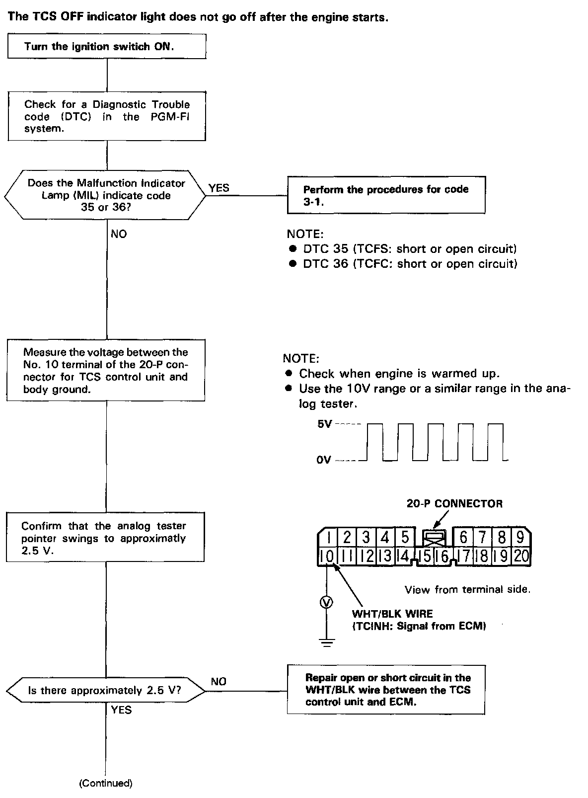
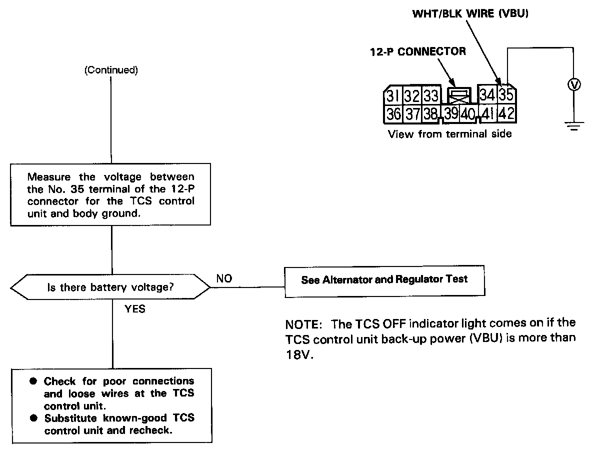

Operation CHARM
: Car repair manuals for everyone.
Home
>>
Acura
>>
1994
>>
NSX V6-3.0L DOHC
>>
Repair and Diagnosis
>>
Brakes and Traction Control
>>
Antilock Brakes / Traction Control Systems
>>
Testing and Inspection
>>
Symptom Related Diagnostic Procedures
>>
TCS OFF Indication Light Does Not Go Off After Engine Starts
TCS OFF Indication Light Does Not Go Off After Engine Starts


The TCS OFF indicator light does not go off after the engine starts.